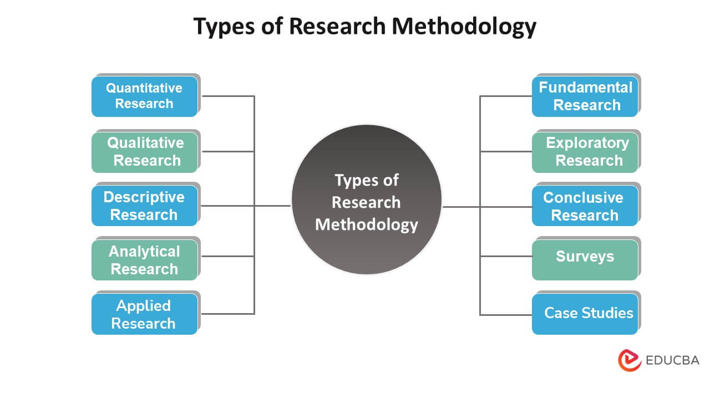

Welcome to research methods today I'm going to take you through a condensed version of all the notes that you have right now. Buckle up!
- Introduction to Research Methods
Research methods are systematic approaches used to gather and analyze data to answer questions or solve problems. Understanding research methods is critical in academic and professional settings because they ensure that conclusions are based on reliable data. By following research methods, we can expand our knowledge, solve problems, and develop new theories.
- Overview of Research Methodologies
Qualitative research - Data that is not in numbers
Quantitative research - Data in numerical form
Qualitative
- Used to investigate softer side of things
- Explore people's ideas
- More subjective
- Inductive approach
Qualitative
- Used to investigate softer side of things
- Explore people's ideas
- More subjective
- Inductive approach
> Qualitative and quantitative methods can both be used to investigate different aspects of a situation
Mixed methods - brings quantitative and qualitative methods together. Sometimes we will use qualitative data to explore a situation and develop hypotheses.
Once these hypotheses are gotten they can be used to text them using quantitative data.
Quantitative
-
WHAT
Qualitative
-
WHY
You need to understand that each research type has a different purpose. Shika iyo!
Choosing the right approach
3 Factors(Mambo ni matatu)
- Nature of your research.
- The methodological approaches in previous studies.
- Practicalities and resource constraints
3 types of research aims
- Exploratory (understand a situation, issue) linked to qualitative
- Confirmatory (measure of quantity of something, test of hypothesis)- quantitative
- A mix of both
- Cheki hii vida
YOUR METHODS NEEDS TO ALIGN WITH YOUR RESEARCH AIMS AND RESEARCH QUESTIONS - Don't use other people's methodological approaches just because they are popular.
Sasa there are 5 common constraints to reseach methods.
- Access to data
- Time requirements
- Budgetary requirements
- Equipments & Software
- knowledge & Skills
So now let's get into research papers
These are scholar written work done by you that answers a specific question through evidence based arguments
Types of research papers
- Analytical papers
- Argumentative papers
- Interpretative papers
How to write research papers
- Topic and review existing literature (Journal articles, Gov't reports, case studies)
- Develop and outline
- Write and Refine
Step 1: Topic (Research question)
- Define your question
- Review existing literature (past studies)
Next step is Identify a research gap
You can do a literature research Google scholar the more the citations a paper has the more credible it is (Well cited , Highly relevant)
Other research resources include: ScienceDirect, Pubmed, Jstor
Step 2: Plan outline
- Bulllet point list → what you'll discuss → in what order
- Structure (Intro → literature review → Methodology → Analysis)
Step 3: Write and Refine
Now let's look at types of research
In this image you only need to get 3
- Quantitative and Qualitative
- Applied research - This one it is conducted to find a solution to a problem
- Basic research - without a specific purpose in mind yani inafanya tu (like a research onto why Gachagua is being impeached)
Wacha sasa nikuingize kwa principles of quality research work
- Integrity
- Objectivity
- Reliability
- Validity
Steps of research process
- Introduction
- Choose a topic
- Narrrowing your broad topic
- Do a literature research
- Identify a problem → GAP → the missing piece
- Write down a research question - be very specific
- Research design - HOW, WHAT, WHO
- Research proposal - Process, plan
After getting the steps done you go to writing a research proposal
A research proposal is designed to persuade someone kama kukatia dem
Aims
- Relevance
- Context
- Approach
- Feasibility
Sections of a proposal
- Title page- Name, Supervisor, Institution & department.
- Introduction - How much is known, who is interested, key research questions.
- Literature review
- Research design - Practical steps, Research type, Sources, Research methods.
- Reference list- Citation, keep track of sources.
Types of research proposal
- Scientific study - Hii ni kitu scientific kama kutafuta dawa ya ukimwi.
- Scholarship- Unaandika proposal upatiwe scholarship simple.
- Market research - Hii ni kama kufanya research ya watu wangapi wanauza smokie pale tao.
- What kind of research
Apo juu kidogo tuliona kitu inaitwa literature review sasa izi ndio steps za kuandika
- Search for relevant literature
- Evaluate and select sources
- Identify themes, debates and gaps
- Outline your structure
- Get to writing
Let me also elaborate on research design kidogo
- Descriptive - Describing existing conditions (Characteristics of the data).
- Correlational - Identify and measure relationships btwn two or more variables.
- Experimental - Is there a casual relationship btwn variables.
- Quasi-Experimental - Casual relationships when the researcher cannot randomly assign participants.
Sampling techniques
Here we'll look at two things
Population and sample
Population is a large sample size whereas sample is a smaller subset of a population. Understood? It largely depends on the specific research aims of the study.
There are two main approaches to sampling
- Probability - used in quantitative research.
- Non-Probability - is not based on a random basis (qualitative research).
Data collection Instruments or techniques
- Questionnaires-Quantitative Research unaenda kuuliza maswali regarding a particular topic you want to research.
- Surveys- asking people directly.
- Interviews - Qualitative research(time consuming) unapiga ma interview one two one two unachukua data yako.
- Observations - Unobstrusively-taking detailed notes. Here you collect data based on people observations.
Once you've collected your data you have to analysis and present
So data analysis is the process of breaking complex topics to small chunks to gain better understanding of it.
Steps of now preparing the data
- Data preparation
- Compilation - bringing together the data.
- Editing - checking the completeness and accuracy.
- Coding - transforming statement to symbol
- Classification.
- Tabulation - recording classified data in numerical form/mathematical terms.
- Describing data.
- Drawing reference of data.
- Interpretation of data - breaking sense of the data.
Validity of the research tool
This is the degree to which an instrument measures what it's supposed to be measuring.
Types of research validity
- Internal validity - ensures that the study measures what it intends to.
- External validity - Determines if the results can be generalized to other settings.
- Face validity - Outlook of the research tool.
- Content validity- Main content of the research tool.
- Criterion validity - Relationship btwn measurement of the tool.
- Concurrent validity - Judgement of the present.
- Construct validity - Quality of the research tool - what the instrument or tool is really measuring.
Ethics in Research
This is what the researcher can and can't do. That is ethical research.
These are the three principles used in ethical research.
- Principle of beneficience.
- Principle of respect of human dignity.
- Principle of justice.
Ethical considerations are crucial in research to ensure the integrity of the research process and the protection of participants. They provide a framework to conduct studies responsibly, safeguarding the rights and well-being of all involved. Ethical considerations in research are essential for ensuring that studies are conducted responsibly, participants are protected, and the integrity of the scientific process is maintained. Researchers must always balance the potential benefits of their work with the possible risks to participants, ensuring that respect, fairness, and transparency guide their research practices.